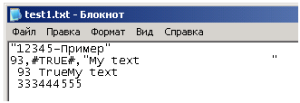
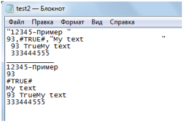
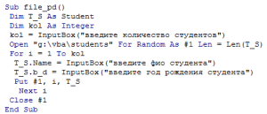
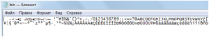

Основы работы с файлами
По виду доступа файлы можно разделить на:
1) последовательного доступа( текстовые);
2) прямого (произвольного) доступа( типизированные);
3) двоичные .
Последовательность действий при записи / чтении файлов любого доступа:
1) открыть файл для чтения или записи ( зависит от типа файла)
2) чтение / запись( зависит от типа файла)
3) закрыть файл
Закрыть файл любого доступа:
Close #<числовой идентификатор>
Файлы последовательного доступа (текстовые):
1) представляют последовательность символов, следовательно при открытии файла из текстового редактора (блокнот, wordpad, word) можно видеть значения, которые туда записаны;
2) данные могут иметь некоторую структуру, организованную разделителями; это зависит от использования формата при выводе (вывод может быть форматным и бесформатным);
структурная единица такого файла – обычно строка;
3) данные могут читаться с любого символа находящегося в середине файла, но запись в какую-либо позицию файла новых данных затирает старые данные, начиная с этой позиции.
4) можно писать данные любых типов, при записи они преобразуются к строковому типу; читать можно данные любого типа, при чтении они из строкового преобразуются к нужному типу (если это возможно)
Команды для работы с файлами последовательного доступа:
Открыть файл :
Open “<имяФайла>” For Input [тип блокировки] As #<числовой идентификатор>
Open “имяФайла” For Output [тип блокировки] As #<числовой идентификатор>
Open “имяФайла” For Append [тип блокировки] As #<числовой идентификатор>
Тип блокировки:
Тип доступа к файлу другим процессам, то есть можно ли работать с одним файлом нескольким пользователям и приложениям одновременно.
1) shared – общий доступ
2) lock read – блокировка чтения
3) lock write – блокировка записи
4) lock read write – блокировка чтения и записи
Записать данные в файл:
Write #<числовой идентификатор>, список вывода
Print #<числовой идентификатор>, список вывода
Читать данные из файла:
Input #<числовой идентификатор>, <список переменных>
Line Input #<числовой идентификатор>, <список переменных>
Установить указатель на заданную позицию:
Seek #<числовой идентификатор>, <номерСимвола> -после этой команды чтение будут производиться с позиции <номерСимвола> по строкам, запись затирает старый файл.
Пример1:
Создайте в файле с лабораторными работами новый модуль. Наберите текст макроса, который реализует запись в текстовый файл в форматированном и неформатированном виде.
Sub write_file()
Dim v_i As Integer
Dim v_s As String * 25
Dim v_b As Boolean
v_i = 93: v_s = “My text”: v_b = True
Open “test1.txt” For Output As #1
Write #1, “12345-Пример ”
Write #1, v_i; v_b; v_s
Print #1, v_i; v_b; v_s
Print #1, 333444555
Close #1
End Sub
Результат (файл test1.txt после записи):
Рис 1 – файл test1.txt
Пример2:
Наберите текст макроса, который реализует считывание из файла test1.txt с использованием Input Line (считывается целыми строками) и Input (считывается по формату данных).
Для проверки конца файла использован EOF(<числовой идентификатор файла>). Если EOF(числовой идентификатор файла)=true, значит, достигнут конец файла.
Каждая прочитанная строка из файла test1.txt переписывается test2.txt
Sub read_file()
Open “g:\vba\test1.txt” For Input As #1
Open “g:\vba\test2.txt” For Output As #2
Dim t As String
Do
Line Input #1, t
Print #2, t
Loop Until EOF(1)
Print #2, “___________”
Seek #1, 1
Do
Input #1, t
Print #2, t
Loop Until EOF(1)
Close #2
Close #1
End Sub

Рис.2 – Результаты считывания из файла test1.txt в файл test2.txt
Файлы прямого (произвольного доступа) доступа :
1) могут содержать данные только одного типа;
2) файл разбит на записи определённой длины, которая определяется типом записываемых данных; каждая запись имеет номер;
3) данные можно читать в любом порядке,
4) нельзя увидеть данные, открыв файл в текстовом редакторе, данные записаны в кодах; проверить что содержится в таком файле можно только из программы и только зная длину одной записи;
5) в файл прямого доступа можно писать массив значений и диапазон ячеек сразу за одну операцию, но !!! длина массива (диапазона) не должна превышать 32 167 байт .
6) чтобы записать новые данные в конец файла, надо открыть его для записи и установить указатель на последнюю запись.
7) одна команда открывает для чтения и записи., то есть можно читать из файла и записывать в файл открытый одной командой ;
Команды для работы с файлами прямого доступа:
Открыть файл (и для чтения и для записи) :
Open “<имя файла>” For Random As #<числовой идентификатор> Len = Len(<имяПеременной>)
Записать данные в файл:
Put #<числовой идентификатор>, <номерЗаписи>, <переменная> – Записывает переменную в файл в позицию с указанным номером. Начальная позиция -1.
Читать данные из файла:
Get #<числовой идентификатор>, <номерПозиции>, <имяПеременной> – читает запись с указанной позиции в переменную.
Установить указатель на нужную запись в файле:
Seek #<числовой идентификатор>, номер записи ‘после этого запись будет производиться в конец файла.
Пример3: Создать файл, содержащий сведения о студентах (ФИО и дата рождения). Сохранить данные в файле «students». Файл будет из блоков по 33 байта (размер записи Student). Запись поблочная.
Первоначально следует определить тип пользователя в самом начале модуля:
Type Student
b_d As Integer
Name As String * 30
End Type

Пример4: Написать программу для считывания записей из файла «students»… Переписать данные их типизированного файла в текстовый о тех студентах, возраст которых больше 20 лет.
Sub file_pd_get()
Dim T As Student
Open “g:\vba\student.txt” For Output As #2
Open “g:\vba\students” For Random As #1 Len = Len(T)
pos = 1
Do
Get #1, pos, T
If 2012 – T.b_d > 20 Then Print #2, T.Name & “ “; T.b_d
pos = pos + 1
Loop Until EOF(1)
Close #1
Close #2
End Sub
Особенности работы с файлами:
1) необходимо соблюдать строгое соответствие между командами записи и чтения:
|
Запись |
чтение |
|
Write |
Input |
|
|
Line input |
|
Put |
Get |
2) номер после знака «#» в операторах открытия, чтения / записи и закрытия файла должен быть одинаковым при работе с одним файлом;
Двоичные файлы
1) просто последовательность байтов или блоков байтов;
2) одна команда открывает для чтения и записи.;
Команды для работы с файлами прямого доступа:
Открыть файл (и для чтения и для записи) :
Open “<имя файла>” For binary As #<числовой идентификатор>
Записать данные в файл:
Put #<числовой идентификатор>, номерЗаписи, переменная ‘ Записывает переменную в файл в позицию с указанным номером.
Читать данные из файла:
Get #<числовой идентификатор>, номерПозиции, имяПеременной ‘ Читает запись с указанной позиции в переменную.
Пример5: Запись в файл bin.txt значений от 0 до 255 через переменную типа integer (2 байта). Данные будут записаны просто как последовательность байтов, при открытии в блокноте, данные не будут иметь привычную для нас числовую форму.
Sub bin_file()
Dim i As Integer
Open “bin.txt” For Binary As #1
For i = 0 To 255
Put #1, , i
Next i
Close #1
End Sub

Рис.3 – файл bin.txt в блокноте.